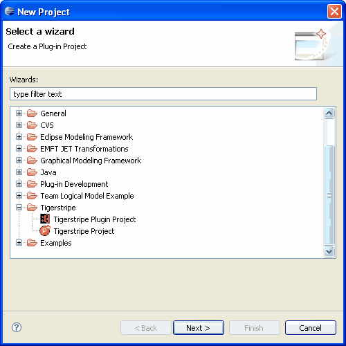
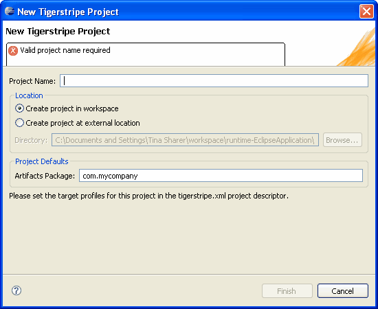

Creating a new Tigerstripe Project
Tigerstripe projects contain the details of a Service Contract Model. More specifically, they contain the following:
- A set of Model Artifacts that define an Information Model and the Behavior Model used in a Service Contract.
- A project descriptor (tigerstripe.xml), used to store additional properties about the project. Such properties can include the project version, description, but can also include properties that are used when generating code.
- A set of diagrams providing a graphical representation of the Service Contract.
The first step in creating a new Service Contract is to create a project using Tigerstripe Workbench. Complete the following procedure to create a new Service Contract using Tigerstripe Workbench.
To create a service contract:
- From the File menu, select New and click Project. Alternatively, you can click the
 icon on the toolbar. The New Project: Select a wizard dialog box opens.
icon on the toolbar. The New Project: Select a wizard dialog box opens.

- Select Tigerstripe Project and click Next. The New Tigerstripe Project dialog box displays.

- Enter a name for your project. In this example, we'll use myTutorialProject.
- Click Finish to create your new project.
Your Service Contract opens in with the Tigerstripe Explorer open displaying the Service Contract and the Tigerstripe Perspective where you can review and change project wide settings.
Related Topics
Documenting your Project
Creating a Service End-point Model
Adding a Method to your Facade Model
Creating a Service Definition
Reviewing Code
Enhancing your Model
 You are now ready to document your project.
You are now ready to document your project.
© copyright 2005, 2006, 2007 Cisco Systems, Inc. - All rights reserved